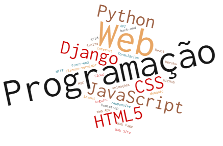

Na Unidade Curricular de Programção Web abordaremos os principais básicos associados ao desenvolvimento para a Web, tanto de lado back-end como front-end.
Aprender-se-ão as seguintes tecnologias 🌐:
De forma a consolidar todos os conhecimentos, será feito em laboratório semanal, de entrega obrigatória, de aplicação da matéria lecionada. Irá ser desenvolvido também um projeto.
